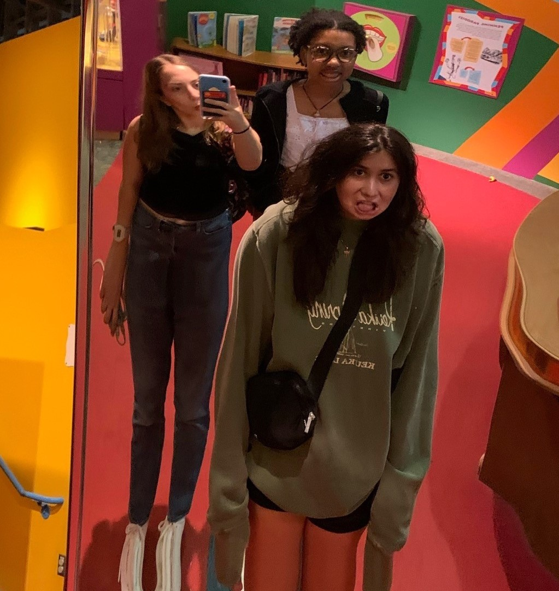
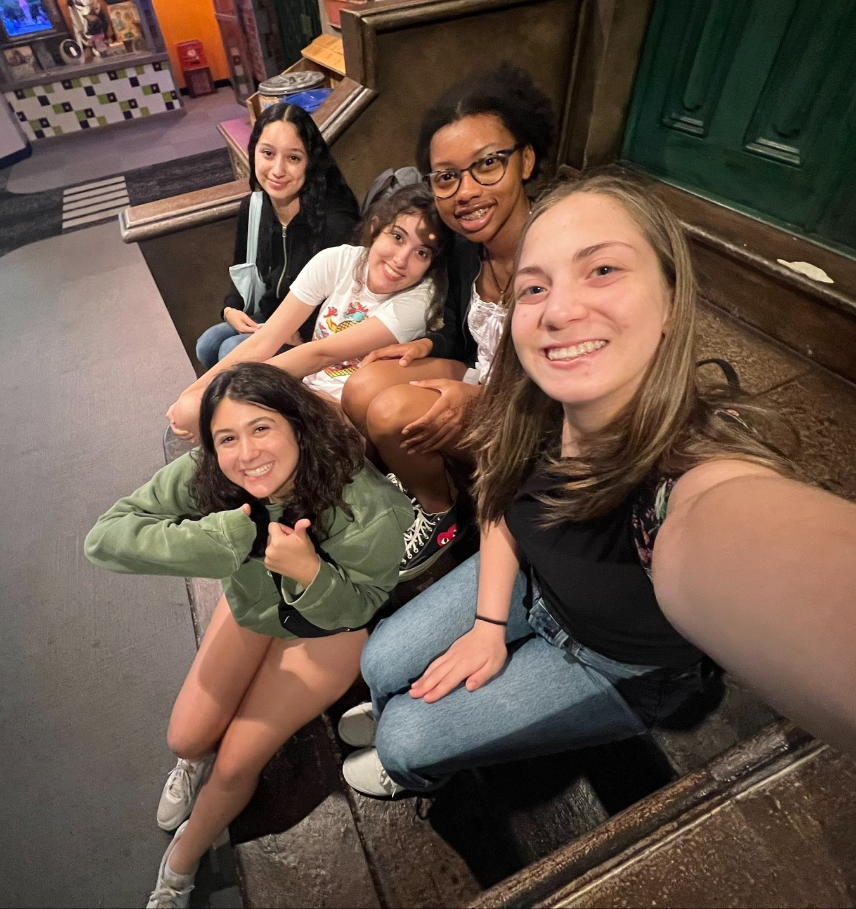
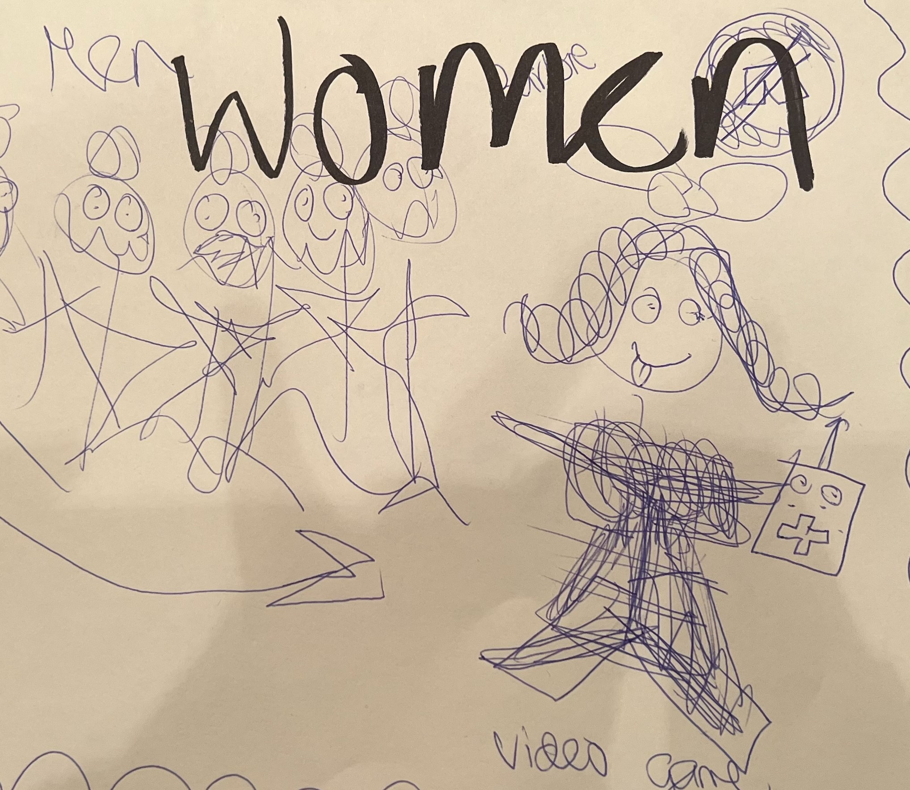

The Strong Museum
Women in Gaming
Ella Azria | July 27th, 2023


I loved going to the Strong Museum yesterday, it was so much fun. I got to be a child for the day. My absolute favorite part of that museum is little wegmans. I love shopping around in a miniature version of my favorite store. I made so many good memories yesterday. I also loved when we talked about women in technology and in gaming. We did a miniature project about it. To analyze an artifact and make an exhibit about it. My artifact was called “Game Gods" and yeast only one of them was a woman. Even though she is one of the best game developers of all time. My group took many artifacts and put them together into a Barbie, Girl Power poster. This was such a great experience for me.

AI Representation
My favorite AI character
Ella Azria | July 25th, 2023
My absolute favorite AI character Is from the Show Barbie Life in the DreamHouse. The AI's name is closet. And in some episodes he's evil. He shows real emotions and feelings! He really shows the capability of an AI robot. Honestly it was so cool to see and “talk to” a robot. You never actually realize what they are capable of until you experience it. I think in the future I have to be more aware that robots surround us. And they are very capable of doing anything. I do think they have been perceived as dangerous. But honestly, if they are used correctly, they are super cool.

Ella's InfoGraph
How Many People Order Pizza a Day?
Ella Azria | July 24th, 2023
I thought that it would be a very cool idea to make an InfoGraph on the amount of pizza ordered per day by a person. This infoGraph tells the story about how many people order pizza per day and the progression of money spent on pizza over time. Depending on the Pizza Chain or restaurant.
Game Jam Day!
Cryptography Quest
Ella Azria | July 21st, 2023
Happy Game Jam Day! Our game is called Cryptography Quest! The object of this game is to reach the castle before the monster catches you. You will face many challenges on the way to reaching the castle. This includes deciphering cryptography, moving forward and backward spaces, and going head to head with the monster. Every turn you take in this game you pull a different card to decipher. If you get it right you move up a space, but so does the monster. you must work as fast as you can because this game is timed. This game can be played in teams, competitively, or cooperative. This game is super fun, we hope you enjoy it!
While creating this game we faced a few small challenges. From the get go, we knew the theme and the idea of our game. We knew we wanted to have it based on cryptography and have a quest to go on. I think the struggle was trying to get all the small details including the look, user experience, and efficiency. We also faced challenges when the game was being played. We had to adjust and tweek different aspects of our game. We ended up adding extra cards and challenge cards to make the game more exciting. I think if we had more time we would make many more cards to decipher as well as challenge cards. We also could have spent more time on the game as a whole, possibly making prizes. Overall, I think our Cryptography Quest game went very well and it was very fun to be a part of making it.
My Favorite Web Developmet Video!
Ella Azria | July 21st, 2023
This is my absolute Favorite Web Developmet Video! The reason this is my favorite video is because I am a beginner in web developmet myself. Coming to It Girls, I started at square one with Web developmet and design. And by watching this video I feel like I learned so much to help me start out. I was very nervous at first. However, once I got the hang of web design, I feel I have grown so much as a web designer. This is why I chose this video as my favorite. I hope you enjoy the video!
AI, Deep Learning, and Machine Learning are NOT the same
Ella Azria | July 18th, 2023

Yes, AI, Machine Learning, and Deep Learning are all similar but they are definitely not the same. AI is a computer that has the ability to process things like a human. Machine Learning is a branch of AI and its job is to focus more on the data being used. For example, voice recognition. And finally deep learning. Deep learning is the process of teaching the computer that Data. It doesn't automatically know it. It takes time. So for someone to say they are the same thing is a stretch. But they all stem from a similar theme. Wanting to use Intelligence to advance our lives.
Source:https://www.reddit.com/r/ProgrammerHumor/comments/kr7k0v/ai/
The life of Genevieve Grotjan
How she Changed the World
Ella Azria | July 18th, 2023
Genevieve Grotjan was a cryptologist and Mathematician during the 1930's- the late 1940's. She was born in Buffalo NY on April 30th of 1913. Genevieve worked for the SIS (Secret Intelligence Services) for a good period of time. The SIS was where she invented an analog machine to work and decipher the Japanese cryptography machine called “Purple”. She later on helped decipher codes during the Cold war working on a project called “Venona”. This project helped decipher Russian messages being transmitted.
Genevieve helped change the course of history by creating machines that ultimately made life changing decisions. In May of 1947, Genevieve stopped working for the government and became a Mathematics professor at George Mason University. She helped change the course of Cryptology and women's history around the world.
Source 1: https://www.nsa.gov/History/Cryptologic-History/Historical-Figures/Historical-Figures-View/Article/1621585/genevieve-grotjan-feinstein/